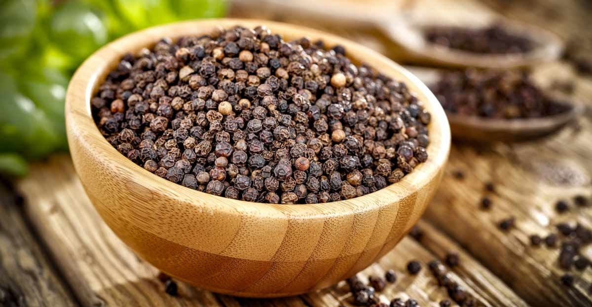

Hôm 8/1 vừa qua, Ronaldo đã đăng tải lên trang Instagram cá nhân đoạn clip ngắn ghi lại cảnh anh đang tập luyện trong phòng gym. Trong một bức ảnh khác, siêu sao người Bồ Đào Nha tạo dáng trước gương với hai tay đang nâng tạ. Dù sắp bước sang tuổi 39, nhưng có thể thấy CR7 vẫn sở hữu cơ bắp cuồn cuộn đáng mơ ước.
Cũng trên trang Instagram cá nhân của mình, Ronaldo còn đăng tải bức ảnh chụp anh đang ôm cô bạn gái Georgina Rodriguez trên bãi biển với chú thích ngắn gọn: “Bạn đời của tôi”. Rodriguez mặc bikini màu trắng khoe vòng ba tròn trịa và nóng bỏng. Tính đến hiện tại, bức ảnh đã nhận được gần 12 triệu lượt thích. Ronaldo cùng gia đình đã tới Dubai (UAE) để nghỉ dưỡng hồi cuối tuần trước. Gia đình CR7 được cho là sẽ ở Dubai trong vài tuần và tham dự buổi lễ trao giải “Quả bóng vàng Dubai” vào ngày 19/1. Ronaldo đã chắc chắn thắng giải “Maradona Award” dành cho cầu thủ ghi bàn nhiều nhất năm 2023.